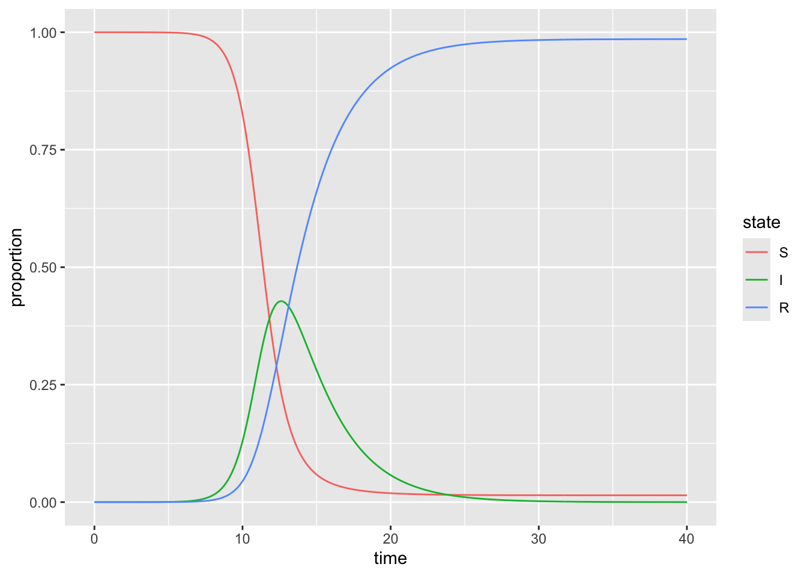

f_sir <- function(time, state, parameters) {
with(as.list(c(state, parameters)), {
infections <- beta*S*I
deaths <- gamma*I
dS <- -infections
dI <- infections - deaths
dR <- deaths
return(list(c(dS, dI, dR)))
})
}P03. Introduction to ggplot: solutions
Part 1: single outbreak
Consider an SIR model. A CSV file has been provided for each of the three populations in the model: S - susceptible, I - infectious, R - recovered. The model used to simulate the disease is
where beta is the transmission rate (per person, per day) and gamma is the recovery rate (by day). This practical is only for plotting - so you don’t necessarily need to fully understand this function in order to move on.
Preparing data for plotting
a) Load the relevant packages and read in the CSV file
The CSV file may be downloaded from here.
library(ggplot2)
library(readr)
library(dplyr)
library(tidyr)
all_dat <- read_csv("beta_1.56756_gamma_0.36508.csv")
all_dat
Attaching package: 'dplyr'The following objects are masked from 'package:stats':
filter, lagThe following objects are masked from 'package:base':
intersect, setdiff, setequal, unionRows: 801 Columns: 4
── Column specification ────────────────────────────────────────────────────────
Delimiter: ","
dbl (4): time, S, I, R
ℹ Use `spec()` to retrieve the full column specification for this data.
ℹ Specify the column types or set `show_col_types = FALSE` to quiet this message.# A tibble: 801 × 4
time S I R
<dbl> <dbl> <dbl> <dbl>
1 0 1.00 0.000001 0
2 0.05 1.00 0.00000106 0.0000000188
3 0.1 1.00 0.00000113 0.0000000388
4 0.15 1.00 0.00000120 0.0000000600
5 0.2 1.00 0.00000127 0.0000000826
6 0.25 1.00 0.00000135 0.000000107
7 0.3 1.00 0.00000143 0.000000132
8 0.35 1.00 0.00000152 0.000000159
9 0.4 1.00 0.00000162 0.000000188
10 0.45 1.00 0.00000172 0.000000218
# ℹ 791 more rowsshould return four columns: | time | S | I | R |
all_dat_long <- pivot_longer(all_dat,
cols = c(S, I, R),
names_to = "state",
values_to = "proportion")
all_dat_long# A tibble: 2,403 × 3
time state proportion
<dbl> <chr> <dbl>
1 0 S 1.00
2 0 I 0.000001
3 0 R 0
4 0.05 S 1.00
5 0.05 I 0.00000106
6 0.05 R 0.0000000188
7 0.1 S 1.00
8 0.1 I 0.00000113
9 0.1 R 0.0000000388
10 0.15 S 1.00
# ℹ 2,393 more rowsshould return three columns: | time | state (key) | proportion (value) |
Plotting reshaped data
b) With your long data frame, make a plot that shows how the proportion of the population in each state changes over time.
Use the line geometry and color each line by state. You might find the following link useful https://ggplot2.tidyverse.org/reference/index.html
ggplot(data = all_dat_long,
aes(x = time,
y = proportion)) +
geom_line(aes(color = state)) 
c) Modify the levels of the state variable to be in S,I,R order rather than in alphabetical order.
Copy and paste the code from the previous plot and re-run it to see how the ordering of the states has changed
all_dat_long$state <- factor(all_dat_long$state,
levels = c("S", "I", "R"))
plot_SIR <- ggplot(data = all_dat_long,
aes(x = time, y = proportion)) +
geom_line(aes(color = state))
plot_SIR
d) Add labels to the x and y axes, change to theme_bw() and set the position of the legend to be at the bottom of the plot
plot_SIR +
theme_bw() +
xlab("Time (days)") +
ylab("Population proportion") +
theme(legend.position = "bottom") e) Instead of colour, use small multiples to show how each state changes over time
plot_SIR_faceted <- ggplot(data = all_dat_long,
aes(x = time,
y = proportion)) +
geom_line() +
theme_bw() +
xlab("Time (days)") +
ylab("Population proportion") +
facet_wrap(facets = vars(state))
plot_SIR_facetedPart 2: 100 outbreaks
We are still considering an outbreak of a disease with S, I, and R. But this time, we are working with 100 simulations. This time, the file you are going to work with can be downloaded here.
Preparing data for plotting
a) Read in the 100 simulation data set
#
all_dat_100 <- read_csv("100_simulations_wide.csv")
all_dat_100Rows: 10100 Columns: 5
── Column specification ────────────────────────────────────────────────────────
Delimiter: ","
dbl (5): sim, time, S, I, R
ℹ Use `spec()` to retrieve the full column specification for this data.
ℹ Specify the column types or set `show_col_types = FALSE` to quiet this message.# A tibble: 10,100 × 5
sim time S I R
<dbl> <dbl> <dbl> <dbl> <dbl>
1 1 0 99 1 0
2 1 0.1 98.9 1.10 0.0313
3 1 0.2 98.7 1.21 0.0657
4 1 0.3 98.6 1.34 0.104
5 1 0.4 98.4 1.47 0.145
6 1 0.5 98.2 1.62 0.191
7 1 0.6 98.0 1.78 0.242
8 1 0.7 97.7 1.96 0.298
9 1 0.8 97.5 2.16 0.359
10 1 0.9 97.2 2.37 0.426
# ℹ 10,090 more rowsshould return five columns: | sim | time | S | I | R |
all_dat_100_long <- pivot_longer(all_dat_100,
cols = c("S", "I", "R"),
names_to = "state",
values_to = "proportion")
all_dat_100_long$state <- factor(all_dat_100_long$state,
levels = c("S", "I", "R"))
all_dat_100_long# A tibble: 30,300 × 4
sim time state proportion
<dbl> <dbl> <fct> <dbl>
1 1 0 S 99
2 1 0 I 1
3 1 0 R 0
4 1 0.1 S 98.9
5 1 0.1 I 1.10
6 1 0.1 R 0.0313
7 1 0.2 S 98.7
8 1 0.2 I 1.21
9 1 0.2 R 0.0657
10 1 0.3 S 98.6
# ℹ 30,290 more rowsshould return four columns: | sim | time | state (key) | proportion (value) |
b) Plot all 100 simulations from the SIR model
Hint: you will need to use the group aesthetic with your line and may choose to set the lines to be semi-transparent. Use faceting (small multiples) to show each state in its own subplot; faceting will be easier in all plots from this point on than colouring by state.
ggplot(data = all_dat_100_long,
aes(x = time,
y = proportion)) +
geom_line(aes(group = sim), alpha = 0.05) +
theme_bw() +
facet_grid(~state) +
xlab("Time(days)") +
ylab("Proportion of population")
Calculating summary statistics
c) Use the group_by() function to tell R that we want to calculate summary statistics for each state at each time
all_dat_100_long_grouped <- group_by(all_dat_100_long, state, time)
all_dat_100_long_grouped# A tibble: 30,300 × 4
# Groups: state, time [303]
sim time state proportion
<dbl> <dbl> <fct> <dbl>
1 1 0 S 99
2 1 0 I 1
3 1 0 R 0
4 1 0.1 S 98.9
5 1 0.1 I 1.10
6 1 0.1 R 0.0313
7 1 0.2 S 98.7
8 1 0.2 I 1.21
9 1 0.2 R 0.0657
10 1 0.3 S 98.6
# ℹ 30,290 more rowsshould return four columns: | sim | time | state (key) | proportion (value) |
should also let you know there are 303 groups
d) Use the summarise function to calculate the median and 95% interval for each state at each time point.
You will need to calculate all three summary statistics separately, and will do so within the same summarise()
all_dat_100_long_summarised <-
summarise(all_dat_100_long_grouped,
q0.025 = quantile(proportion, probs = 0.025),
q0.500 = quantile(proportion, probs = 0.5),
q0.975 = quantile(proportion, probs = 0.975))`summarise()` has grouped output by 'state'. You can override using the
`.groups` argument.e) Use geom_ribbon to plot the 95% interval and geom_line to plot the median for each state.
For its aesthetics, geom_ribbon requires a ymin and ymax and can be coloured and filled and made semi-transparent. Ensure you label the axes appropriately.
ggplot(data = all_dat_100_long_summarised,
aes(x = time)) +
geom_ribbon(aes(ymin = q0.025, # lower edge of ribbon
ymax = q0.975), # upper edge of ribbon
alpha = 0.5, # make semi-transparent
fill = "lightskyblue", # fill blue
color = NA) + # no border color
geom_line(aes(y = q0.500)) + # line for median
facet_grid(cols = vars(state)) +
theme_bw() + # nicer theme
xlab("Time (days)") + # human friendly axis label
ylab("Population") # human friendly axis labelf) If you have time left, you may wish to investigate visualising all 100 simulations, colouring by state, as before, and faceting by simulation
ggplot(data = all_dat_100_long,
aes(x = time)) +
geom_line(aes(y = proportion, color = state)) +
facet_wrap(facets = vars(sim)) +
theme_bw() + # nicer theme
xlab("Time (days)") + # human friendly axis label
ylab("Population") + # human friendly axis label
theme(legend.position = "bottom")
g) Discuss whether you think faceting by state or simulation gives a clearer understanding of how the simulations vary
I don’t think so - too many panels. But you may have your reason :)